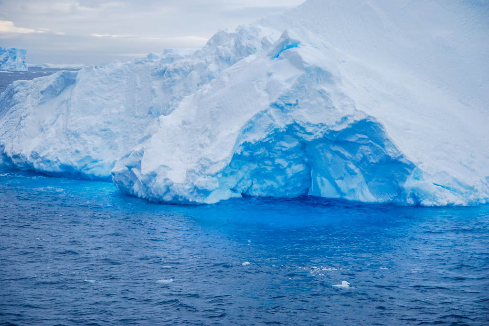
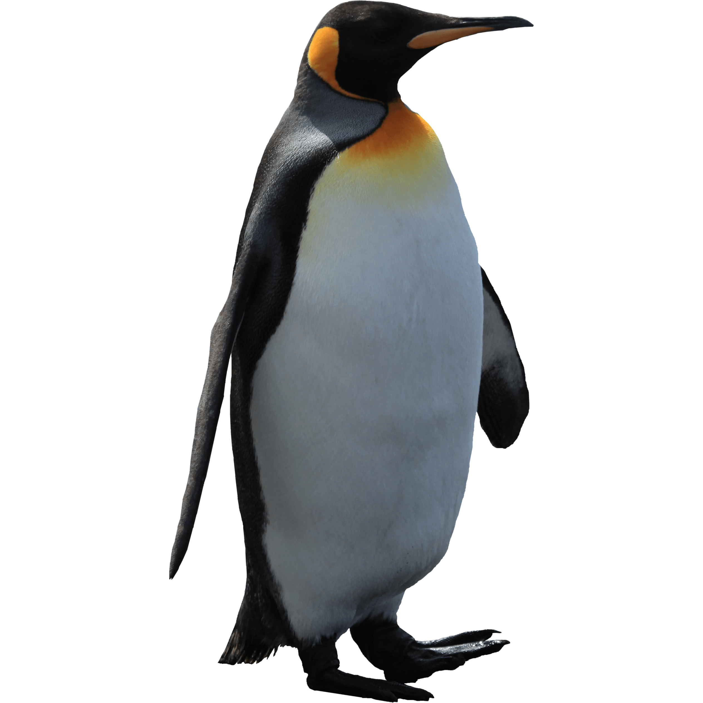
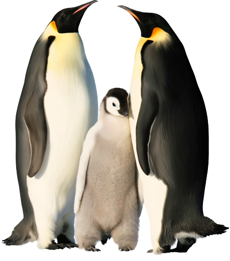
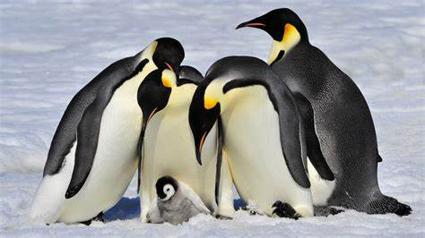

Aptenodytes forsteri
El pingüino emperador (Aptenodytes forsteri) es una de las especies más conocidas de pingüinos. Por ende te vamos a proporcionar información detallada sobre su hábitat, ubicación geográfica, hábitos alimenticios y reproductivos, y estado de conservación actual:
- Hábitat:
- El pingüino emperador habita en la Antártida, en las zonas de hielo marino y cerca de la costa. Se le puede encontrar en el hielo que flota sobre las aguas del mar y en los glaciares de la Antártida. 
- Ubicación geográfica:
- El pingüino emperador se encuentra únicamente en la Antártida, y es la única especie de pingüino que vive exclusivamente en la Antártida.
- Hábitos alimenticios:
- El pingüino emperador se alimenta principalmente de kril, pero también consume otros crustáceos, peces y calamares. Es un cazador ágil y puede sumergirse a profundidades de hasta 500 metros para encontrar comida. Además es el pingüino más grande, midiendo en promedio 1,2 metros de altura y pesando entre 22 y 45 kilogramos. 
- Hábitos reproductivos:
- El pingüino emperador es conocido por su complicado sistema de apareamiento y cría. Después de que la hembra deposita su huevo, el macho se hace cargo de incubarlo mientras la hembra se va a buscar comida. Durante este período, que puede durar hasta 65 días, el macho debe resistir temperaturas de hasta -40°C y vientos de más de 160 km/h. Una vez que nace el polluelo, ambos padres se turnan para alimentarlo hasta que sea lo suficientemente grande para valerse por sí mismo. 
- Estado de conservación:
- El pingüino emperador se encuentra actualmente clasificado como una especie en peligro de extinción según la Lista Roja de la Unión Internacional para la Conservación de la Naturaleza (UICN). Las principales amenazas para su conservación son la pérdida de su hábitat debido al cambio climático, la acidificación de los océanos y la contaminación de los mares. Además, la disminución de las poblaciones de kril y la pesca excesiva también son amenazas importantes para la especie. Se estima que la población de pingüinos emperadores en el mundo es de alrededor de 595,000 parejas reproductoras, lo que representa una disminución significativa en comparación con las estimaciones anteriores.
- 8 datos curiosos de los Pingüinos Emperadores:
-
- Los pingüinos emperadores tienen la capacidad de adaptarse a las condiciones extremadamente frías de la Antártida. Para mantenerse calientes, se agrupan en grandes colonias en las que se turnan para estar en el centro y protegerse del frío.
- El pingüino emperador es la única especie de pingüino que se reproduce durante el invierno antártico. Esto significa que los pingüinos emperadores tienen que enfrentar las condiciones más extremas del continente para asegurar la supervivencia de su especie.
- Los pingüinos emperadores son excelentes nadadores y pueden sumergirse a profundidades de hasta 500 metros. Además, son capaces de permanecer sumergidos durante más de 20 minutos mientras buscan comida.
- El pingüino emperador ha sido objeto de varias películas y documentales, incluyendo la popular película "Happy Feet" de 2006. Además, ha sido objeto de varios estudios científicos para comprender mejor su comportamiento y la adaptación de su especie a la Antártida. 
- Los pingüinos emperadores son capaces de ayunar durante largos períodos de tiempo. Durante el período de incubación, que puede durar hasta 65 días, los machos no comen nada y se basan en las reservas de grasa que tienen almacenadas en sus cuerpos.
- Los pingüinos emperadores son conocidos por su habilidad para encontrar a sus parejas en medio de grandes colonias de pingüinos. Para hacerlo, emiten un canto único que les permite reconocerse entre ellos.
- La temperatura corporal de los pingüinos emperadores puede llegar a los 40°C, lo que les permite resistir las bajas temperaturas de la Antártida.
- Los pingüinos emperadores tienen una tasa metabólica muy baja, lo que les permite conservar energía durante los largos períodos de ayuno. De hecho, su tasa metabólica es tan baja que pueden reducir su frecuencia cardíaca a 15 latidos por minuto para ahorrar energía mientras esperan a que regrese su pareja con alimento.
| Especie | Ubicación Geográfica | Estado de Conservación |
|---|---|---|
| Pingüino emperador (Aptenodytes forsteri) | Habita en la Antártida, específicamente en el hielo marino alrededor del continente antártico | Actualmente se encuentra clasificado como una especie en peligro de extinción debido a la pérdida de su hábitat y la disminución de su población, que se estima en alrededor de 595.000 parejas reproductoras. |
| Pingüino de Magallanes (Spheniscus magellanicus) | Habita en la costa atlántica de Sudamérica, desde Brasil hasta Argentina | Aunque es una especie clasificada como "casi amenazada", su población ha disminuido en las últimas décadas debido a la pesca excesiva y la contaminación del agua. |
| Pingüino de Humboldt (Spheniscus humboldti) | Habita en la costa oeste de Sudamérica, desde Perú hasta Chile | Es una especie clasificada como "vulnerable" debido a la pesca excesiva y la contaminación del agua. Actualmente se estima que su población está entre 3.300 y 12.000 parejas reproductoras. |